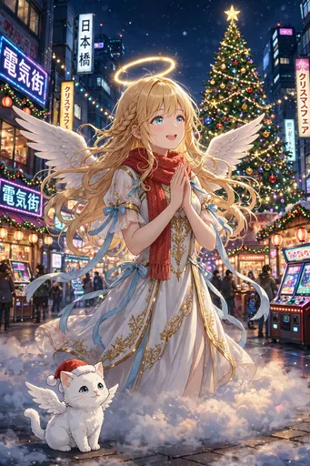
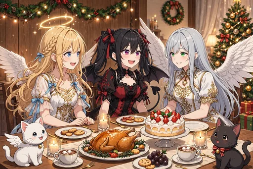
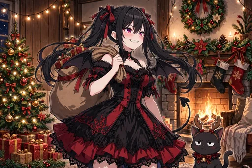

セラフィナ 第10弾『クリスマス編』イラストパック

ストーリー紹介
クリスマスの日本橋を舞台にした、あたたかい冬の30枚です。ツリーの飾り付けやイルミネーションの街歩きから始まり、ケーキやチキンの予約、プレゼント選びとラッピング、天界への手紙をしたためて、ルチアのサンタ姿やガブリエラの視察も交えながら、イブの食卓を囲むまでの、準備と当日の物語です。今回からガチャ・図鑑にも全点収録しました。
ツリーの飾り付けやイルミネーションの街歩きから始まり、ケーキやチキンの予約、プレゼント選びとラッピング、天界への手紙をしたためる場面まで、クリスマスの「準備」の楽しさを丁寧に描きます。ルチアのサンタ姿やガブリエラの視察も交えながら、イブの食卓を囲むまでの、あたたかい冬の物語です。季節イベント特集のクリスマスページからも場面を紹介しています。
ダウンロード販売（ZIP 3分割）／全年齢／BOOTH「angel222」で販売中
商品情報
| タイトル | セラフィナ 第10弾『クリスマス編』イラストパック｜見習い天使の現代日本コメディ |
|---|---|
| 収録内容 | イラスト30点（ダウンロード販売） |
| 価格 | 500円 |
| 販売 | BOOTH「angel222」 https://angel222.booth.pm/items/9086336 |
| 備考 | 全年齢。登場するキャラクターは架空の存在です。イラストにはAI生成を含みます |
場面紹介（全30枚）


- 1. 日本橋のクリスマスツリー — 日本橋の電気街に立つ大きなクリスマスツリーを見上げる場面。
- 2. イルミネーションの並木道 — イルミネーションに彩られた冬の並木道を、冬コート姿で歩く場面。
- 3. サンタ帽ではしゃぐ — 部屋でサンタ帽をかぶり、鏡の前ではしゃぐ場面。
- 4. チキンの予約票 — コンビニの前でフライドチキンの予約票を握りしめる場面。
- 5. ケーキ屋のショーケース — ケーキ屋のショーケース前で目を輝かせる場面。
- 6. サンタ衣装のルチア — 黒×赤のサンタ衣装で勝ち気にポーズを決めるルチアと、そばにノワール。
- 7. ガブリエラのクリスマス視察 — 「視察」の名目で訪れたガブリエラとツリーの前で。
- 8. プレゼント選び — 雑貨店でプレゼント選びに悩む場面。
- 9. ラッピングと格闘 — 部屋で不器用なラッピングと格闘する場面。
- 10. 街角のクリスマスキャロル — 街角でクリスマスキャロルを歌う場面。
- 11. チキンのバーレルを抱えて — 夜の街でチキンのバーレルを抱えて帰る場面。
- 12. おうちでケーキのろうそく — おうちでクリスマスケーキのろうそくを吹く場面。
- 13. ケーキを巡る攻防 — ケーキを巡るルチアとの攻防の場面。
- 14. 大阪に雪 — めずらしく雪の降る大阪ではしゃぐ場面。
- 15. 寒い夜の温かい飲み物 — 寒い夜、疲れた会社員に温かい飲み物を差し出す場面。
- 16. クリスマスマーケット — クリスマスマーケットの屋台をめぐる場面。
- 17. 手作りオーナメント — 手作りのオーナメント作りに取り組む場面。
- 18. 小さなツリーのある部屋 — 小さなツリーのある部屋でくつろぐ場面。
- 19. カラオケでクリスマスソング — カラオケでルチアとクリスマスソングをデュエットする場面。
- 20. ガブリエラとケーキの報告書 — ケーキを「報告書用に」と言いながら二切れ目に手を伸ばすガブリエラの場面。
- 21. 天界への手紙 — クリスマスカードに天界への手紙をしたためる場面。
- 22. 教会の鐘の音 — 遠くに教会の鐘の音を聞く、静かな場面。
- 23. サンタ衣装のモコ — サンタ衣装のモコが、小さなプレゼント袋をくわえた場面。
- 24. トナカイのノワール — トナカイの角カチューシャをつけられたノワールの場面。
- 25. イブの食卓 — みんなで囲むクリスマスイブの食卓の場面。
- 26. イブの夜の差し入れ — イブの夜に働くコンビニ店員や警備員さんへ差し入れを届ける場面。
- 27. 冬の星空を見上げて — 冬の星空を見上げる場面。
- 28. 枕元の小さなプレゼント — 朝、枕元の小さなプレゼントに気づく場面。
- 29. 片付けと残りケーキの朝ごはん — クリスマスの翌朝、片付けと残りケーキの朝ごはんの場面。
- 30. フィナーレ：クリスマスの全員集合 — ツリーの前で、セラフィナ、ルチア、ガブリエラ、モコとノワールの全員集合の場面。
ほかのイラストパック
物語の次は、第11弾『後輩降臨編』です。